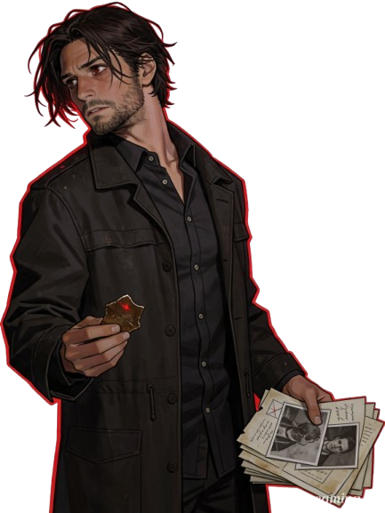
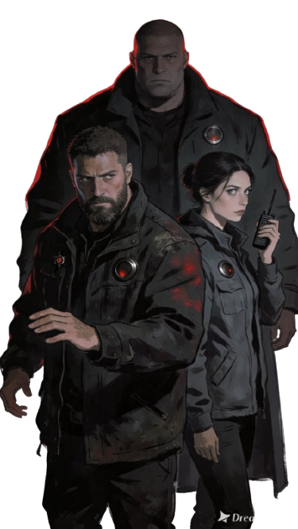

TESTEMUNHA
HELENA
HELENA
DUARTE
Professora da escola municipal • 34 anos
ARQUIVO DE OPERAÇÃO // SESSÃO 03
Uma investigação sobre ocorrências ligadas a uma presença que parece se manifestar através de um sino que ninguém consegue localizar. O quadro começa aqui; o restante da investigação será construído durante a sessão.
INVESTIGAÇÃO COMPARTILHADA
ARQUIVO HUMANO
Professora da escola municipal • 34 anos

Pesquisador ligado às ocorrências

Condutor • Observador • Silenciador
PONTOS DE INVESTIGAÇÃO
PONTO DE INTERESSE • INVESTIGAÇÃO PENDENTE
PONTO DE INTERESSE • INVESTIGAÇÃO PENDENTE
PONTO DE INTERESSE • INVESTIGAÇÃO PENDENTE
PONTO DE INTERESSE • INVESTIGAÇÃO PENDENTE
PONTO DE INTERESSE • ACESSO DESCONHECIDO
MATERIAL DE INVESTIGAÇÃO
MATERIAL PREPARADO
LINHA DE INVESTIGAÇÃO
A primeira pergunta da investigação: de onde vem o som?
Descobrir se os cinco locais possuem alguma relação.
Investigar por que o quinto ponto é tratado de maneira diferente.
Descobrir o que está por trás do fenômeno.